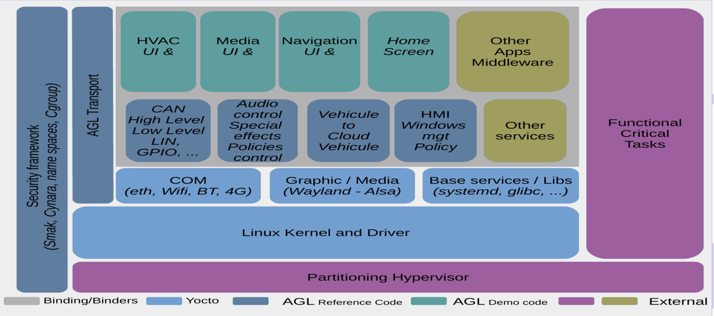

Modern cars have become a lot more technologically sophisticated and different than those of the past. We are seeing a wider range of new features and functionality, with a lot more complex software. It is fair to say that the cars being introduced to the market today have much more in common with computing devices like cell phones, than their predecessors did. Modern car manufacturers are also integrating support for a broad range of communication technologies for these “connected” cars. With the advent of such vehicles, Linux has become a natural choice for the software platform, with Automotive Grade Linux as a promising example.
From a security point of view, the remote capabilities of a connected car results in a much larger attack surface. This opens a whole new world of security vulnerabilities that need to be considered during the architectural design. History shows that physical access to a device is sufficient for a hacker to gain root privileges. This makes the car a hostile environment.
The Security Blueprint documents the security features that are included as part of Automotive Grade Linux (AGL) and identifies areas that need to be addressed from a security perspective as part of AGL. It also gives guidance around existing technologies and solutions.
Security domains will allow us to create a set of tests verifying the security of Automotive Grade Linux.
This document is firstly based on an existing AGL security-blueprint.
For security to be effective, the concepts must be simple. And by default, anything that is not allowed is forbidden.
We will cover topics starting from the lowest level (Hardware) up to the highest levels (Connectivity and Application). We will move quickly on Hardware and Connectivity because this is not supported at our level. Solutions of connectivity problems concern updates and secured settings while hardware securing is related to the manufacturers.
Adversaries
Adversaries and attackers within the Automotive space.
- Enthusiast Attackers
Enthusiast attackers have physical access to the Engine Control Units (ECUs) at the circuit board level. They can solder ‘mod chips’ onto the board and have access to probing tools. They also have information on ECUs that have been previously compromised and have access to softwares and instructions developed by other members of car modification forums. The goal of the enthusiast hacker could be, but is not limited to, adding extra horse power to the car or hacking it just for fun.
- Corrupt Automotive Dealers
Corrupt automotive dealers are attackers that have access to the same capabilities as enthusiasts, but also have access to the car manufacturer’s (OEM) dealer network. They may also have access to standard debugging tools provided by the car manufacturer. Their goal may be to support local car theft gangs or organized criminals.
- Organized Criminals
Organized criminals have access to all of the above tools but may also have some level of control over the internal network at many dealerships. They may have hacked and gained temporary control of the Over-The-Air (OTA) servers or the In-Vehicle Infotainment (IVI) systems. This is very much like the role of organized criminals in other industries such as paid media today. Their goal is to extort money from OEMs and/or governments by threatening to disable multiple vehicles.
- Malware Developers
Malware developers have developed malicious software to attack and compromise a large number of vehicles. The malicious software is usually designed to spread from one vehicle to another. Usually, the goal is to take control of multiple machines and then sell access to them for malicious purposes like denial-of-service (DoS) attacks or theft of private information and data.
- Security Researchers
Security researchers are ‘self-publicized’ security consultants trying to make a name for themselves. They have access to standard tools for software security analysis. They also have physical access to the vehicle and standard hardware debugging tools (Logic Analyzers, Oscilloscopes, etc). Their goal is to publicize attacks for personal gain or just to gain personal understanding with a sense of helping make things more secure.
Attack Goals
In today’s connected vehicle, more and more functionality is moving to software control, meaning that the threat of attack becomes greater and greater. We see car features like navigation and summoning, car access/engine start, and motor/ECU upgrades all controlled through software and connections to the cloud. The risk of attack is high because there are high value targets in play.
Here, we outline some of the major threats categories along with some sample attackers, example attacks, and a relative importance. These threat categories are intended to be general examples. There can be many nuances to threat types. Additionally, there can be many sub-attacks that eventually lead to these higher level attack goals.
| Threat Category | Sample Attacker | Example Attacks | Relative Importance |
|---|---|---|---|
| Vehicle theft | Individual, organized criminals | Send the car to an unplanned destination, get a key for the car, gain control of the unlock mechanism | Reduced likelihood of future vehicle purchases (Profit Later), bad press (Brand Integrity) |
| Reduced vehicle functionality | Terrorist groups, disgruntled employees | Lock the driver out of the car, cause the car to crash, block access to infotainment system | Inability sell paid-for apps and content (Profit Now), bad press (Brand Integrity), possible loss of life (Physical Injury) |
| Vehicle hacking | Vehicle owner, competitor | Get content without paying, modify DRM licenses, unlock of after-market features, theft of IP | Loss of sales for content and features (Profit Now), lawsuits from content owners (Profit Later), loss of competitive advantage (Profit Later) |
| Sensitive asset theft | Organized criminals, blackmailers | Steal credit card numbers, health information, camera data, steal bandwidth | Bad press (Brand Integrity), lawsuits from vehicle owners (Profit Later) |
The Automotive Grade Linux (AGL) initiative builds upon open-source software including Linux and Tizen to offer a flexible application framework. However, the security provisions of the app framework, Cynara, and the security manager only go so far in keeping the biggest threats at bay. As experience has shown, providing a constrained app (like that in the Android Open Source Platform) and store development flow, signature verification, DAC sandboxing, and MAC (SMACK) controls over the platform can have a certain amount of success with the security of the system. However, the openness of the system invites many researchers, hobbyists and hackers and financially motivated attackers to compromise the system for their own gains.
As AGL arrives on modern automobiles, this is inevitably inviting many capable actors to modify, attack, and compromise these well thought-out systems and their applications. With concerns like safety and security, the auto industry cannot afford to go the way of consumer devices like phones and tablets where security problems are encountered on a frequent basis. It is imperative to use a layered approach and defense-in-depth to protect the system from inevitable attack.
Assets and Security Categorization
This section outlines some of the assets that are likely to be found in the vehicle and their relative sensitivity from an attack point of view. Additionally, the final column on the right lists some of the recommended protection types that can be applied to these types of assets (Note that the empty cells refer to the cells above them). A good protection approach will give priority to the most sensitive assets, using a defense-in-depth approach to cover these assets. Less sensitive assets are treated at a lower priority, typically protected with fewer protection techniques. A more fine-grained prioritization of the the assets in a concrete vehicle network can be achieved with detailed threat analysis which considers the topology of the vehicle network and access-controls that are in-place. e.g. the EVITA framework for attack trees.
| Asset Category | Examples | Sensitivity | Recommended Protection Types |
|---|---|---|---|
| Software | ECU software, infotainment software, OS images | Critical | Key Management, Mutual Asymmetric Authentication, HSM and WhiteBox Encryption, Message Integrity Checks, Hardening/SW Protection, Program Transforms/ Obfuscation, Integrity Verification, Secure OS |
| Car Access | Biometric data, car keys | ||
| Payment Data | Credit cards, User profile critical data | ||
| Recordings | Internal camera recording, internal audio recording, external camera recording | High | Encryption, Message Integrity Checks, Hardening/SW Protection, Program Transforms / Obfuscation |
| User Profile | Usernames and passwords, customization, calendar, contacts | ||
| Location | GPS coordinates, vehicle usage data | ||
| Purchased Content | Video, audio, licenses | ||
| Teleconference | Chat, audio, video | Medium | SW Protection, Program Transforms / Obfuscation, Authenticated encryption for transmission |
| Vehicle data | Vehicle info, sensor data | ||
| Navigation data | Static and dynamic maps | ||
| 3rd party data | Home automation commands, cloud game data |
Hardening term
The term Hardening refers to the tools, techniques and processes required in order to reduce the attack surface on an embedded system, such as an embedded control unit (ECU) or other managed devices. The target for all hardening activities is to prevent the execution of invalid binaries on the device, and to prevent copying of security related data from the device.
AGL security overview
AGL roots are based on security concepts. Those concepts are implemented by the security framework as shown in this picture:

Acronyms and Abbreviations
The following table lists the strongest terms utilized within all this document.
| Acronyms or Abbreviations | Description |
|---|---|
| AGL | Automotive Grade Linux |
| ECU | Electronic Control Unit |
References
- security-blueprint.
- http:// docs.automotivelinux.org/docs/architecture/en/dev/reference/security/01-overview.html
- [2017] - kernel security.
- https:// www.kernel.org/doc/Documentation/security/
- [2017] - Systemd integration and user management.
- http:// iot.bzh/download/public/2017/AMM-Dresden/AGL-systemd.pdf
- [2017] - AGL - Application Framework Documentation.
- http:// iot.bzh/download/public/2017/SDK/AppFw-Documentation-v3.1.pdf
- [2017] - Improving Vehicle Cybersecurity.
- https:// access.atis.org/apps/group_public/download.php/35648/ATIS-I-0000059.pdf
- [2016] - AGL framework overview.
- http:// docs.automotivelinux.org/docs/apis_services/en/dev/reference/af-main/0-introduction.html
- [2016] - SecureBoot-SecureSoftwareUpdates.
- http:// iot.bzh/download/public/2016/publications/SecureBoot-SecureSoftwareUpdates.pdf
- [2016] - Linux Automotive Security.
- http:// iot.bzh/download/public/2016/security/Linux-Automotive-Security-v10.pdf
- [2016] - Automotive Security Best Practices.
- https:// www.mcafee.com/it/resources/white-papers/wp-automotive-security.pdf
- [2016] - Gattacking Bluetooth Smart Devices.
- http:// gattack.io/whitepaper.pdf
- [2015] - Comprehensive Experimental Analysis of Automotive Attack Surfaces.
- http:// www.cs.wayne.edu/fengwei/15fa-csc6991/slides/8-CarHackingUsenixSecurity.pdf
- [2015] - Security in Automotive Bus Systems.
- http:// citeseerx.ist.psu.edu/viewdoc/download?doi=10.1.1.92.728&rep=rep1&type=pdf
- [2014] - IOActive Remote Attack Surface.
- https:// www.ioactive.com/pdfs/IOActive_Remote_Attack_Surfaces.pdf
- [2011] - A practical attack against GPRS/EDGE/UMTS/HSPA mobile data communications.
- https:// media.blackhat.com/bh-dc-11/Perez-Pico/BlackHat_DC_2011_Perez-Pico_Mobile_Attacks-wp.pdf
- [2011] - Comprehensive Experimental Analyses of Automotive Attack Surfaces.
- http:// www.autosec.org/pubs/cars-usenixsec2011.pdf
- [2010] - Relay Attacks on Passive Keyless Entry and Start Systems in Modern Cars.
- https:// eprint.iacr.org/2010/332.pdf
- [2010] - Wifi attacks wep wpa.
- https:// matthieu.io/dl/wifi-attacks-wep-wpa.pdf
- [2008] - SMACK.
- http:// schaufler-ca.com/yahoo_site_admin/assets/docs/SmackWhitePaper.257153003.pdf